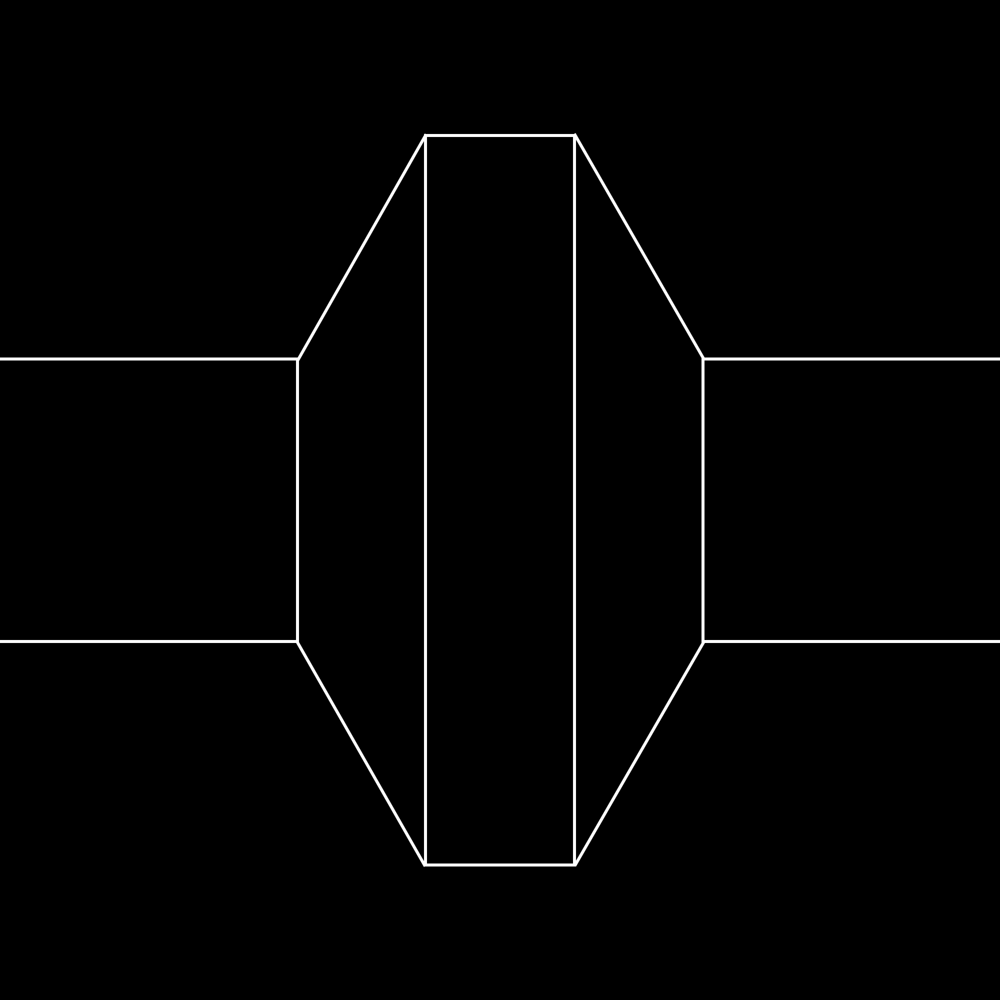

You might say a poem is a semicolon, a living semicolon, what connects the first line to the last, the act of keeping together that whose nature is to fly apart. Between the first and last lines there exists—a poem—and if it
were not for the poem that intervenes, the first and last lines of a poem would not speak to each other.
Would not speak to each other. Because the lines of a poem are speaking to each other, not you to them or they to you.